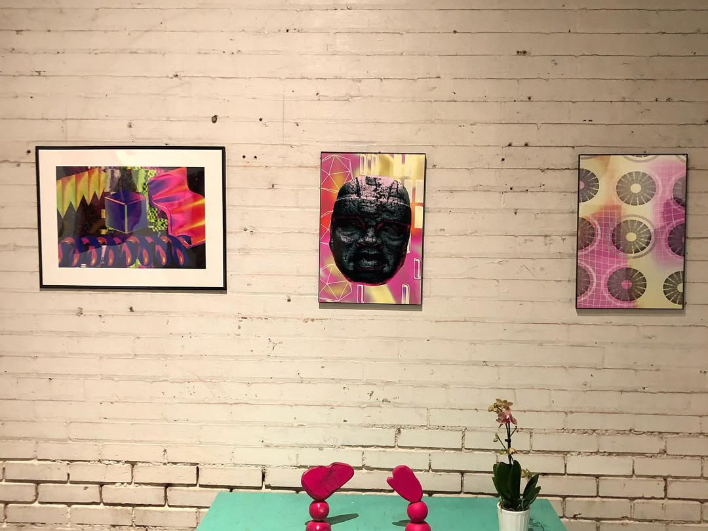

PROJECT / 02 · 2025
River
Pierce
An augmented reality showcase for public heritage and cultural storytelling.

Stories that continue beyond the frame.
The River Pierce Foundation showcase explores augmented reality as a layer for public memory and place-based storytelling.
Hypergraphia shaped the technical direction for a visitor experience that can connect physical interpretation with digital media.
This page records the project in development as the showcase continues to take shape.